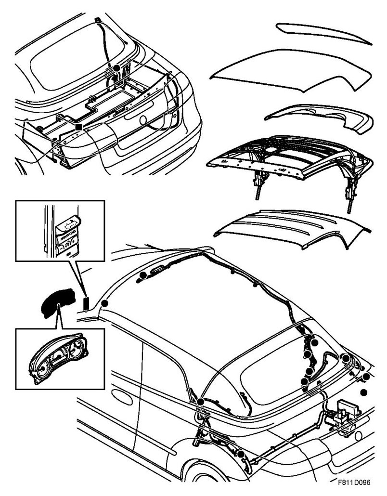

Soft-Top System, Brief Description
Soft-Top System, Brief Description

The soft-top system works with a combination of mechanical, hydraulic and electronic means. This provides fast and exact control of the motion. The soft top is opened and closed either with the control button or with the remote control and the function is fully automatic. No manual handling is necessary.
The soft top, which is pulled taut on the mechanism, comprises three layers, one outer water-repellent, one insulating and one interior.
The soft top mechanism is built of parallel three-part magnesium rails with six lateral bows. When the soft top is open, it is covered by the soft top cover and stored in a space between the rear seat and the luggage compartment.
The soft top is opened and closed using a hydraulic system controlled by the STC (Soft Top Control).